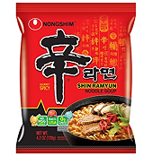

Food of the week: Ramen
There are quite a few popular brands of Ramen with college students. For most college students the most popular brands of Ramen are Top Ramen and Maruchan. However in todays blog post I will be focusing on a lesser popular brand of Ramen noodles Nongshim Ramen.
Image Credit
Why I favor this style of Ramen
I favor this brand and version of Ramen due to its spicy nature and the quality of the noodles inside. I discovered this brand while trying Ramen restaurants around Washington D.C. and saw the package behind the counter. After eating the ramen I googled until finding the package online and then bought it. I have been adding ingredients and spices to it ever since and am still developing a final version.
Recipe most recently used
Ingredients for basic build:
- 1 Package Shin Ramyun by Nongshim
- 3 spoonfulls of Kimchi
- 1 egg
- 1/3 cup grated cheddar cheese
Instructions:
- Bring a medium sized pot of water to boil with enough water that the ramen will barely float above the bottom surface of the pan.
- Add the ramen and try to leave it in its original patty form.
- 1.5 minutes after adding the ramen, make a compartment in the center of the ramen that is big enough to fit an egg and then crack the egg into that compartment.
- Watch as the egg begins to poach itself as the white cooks, whipping around the yolk.
- After another minute add the spoonfulls of Kimchi making sure to get some of the pickiling juices in the broth as well as the spice packet included in the Nongshim package.
- After another minute or two(depends how much water was used) the ramen should be ready to be taken out of the pot and into a bowl for consumption. Remeber to wait a few mintues before indulging! While it may be tasty the mouth burns from a premature chug of broth may scar your mouth for the next week.
- As the hot ramen has been bowled add the grated cheese into the mix and stir gently
- Once the Ramen has sufficiently cooled it is ready to be enjoyed, Bon Appetit!
- OPTIONAL: for the hot sauce and meat lovers out there, one way I enjoy to spice up this build of Ramen is to add 2 pieces of chopped cooked bacon, a very small amount of bacon grease, and then douse the completed Ramen in habanero hot sauce.
Comments for the Blogger
Sorry, posting comments is currently disabled. Try again later.